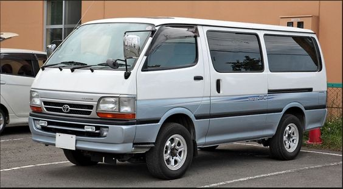
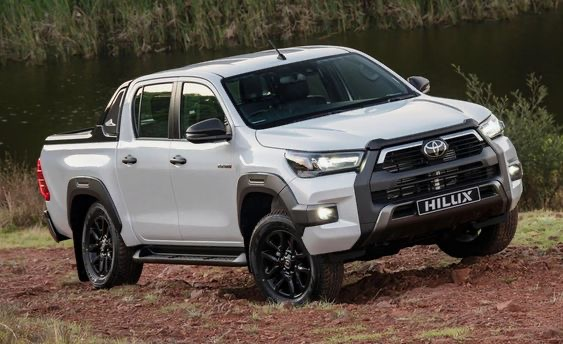
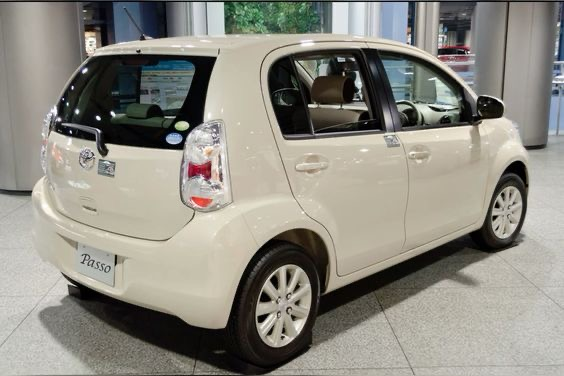
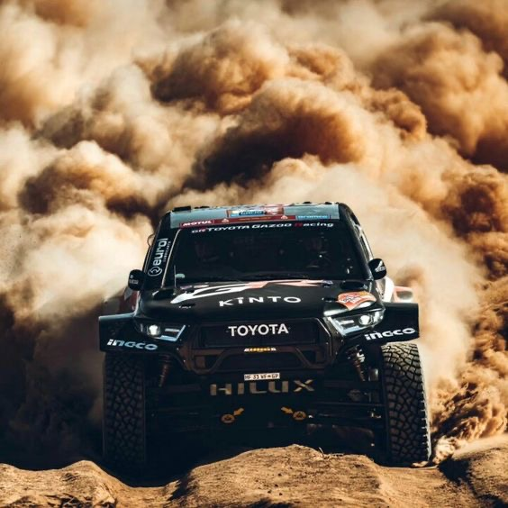
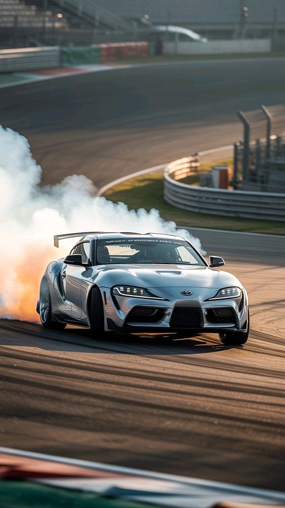
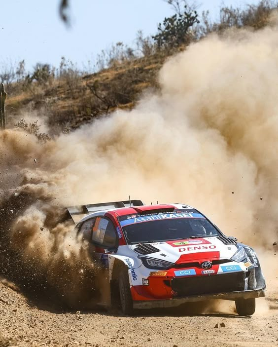

O TEU PRÓXIMO TOYOTA

NOVO COROLLA CROSS 2025.
Qualidade Inovadora
O Toyota Cross 2025 é um SUV topo de gama com novidades de design, tecnologia e segurança.
Pagamento Flexível
Clica no botão abaixo para ver todos os detalhes deste veículo, as modalidades de pagamento, descontos e os benefícios.

Explore
Favoritos dos Moçambicanos



Conheça
A Família GR

Corolla GR-S
Desportivo hot hatch de alta performance com motor 1.6L turbo e 304cv, GR-FOUR.

Hilux GR
Versão Sport do Hilux com motor 2.8L, baixa suspensão e 224cv quando em stock.

Fortuner GR-S
Versão de alta performance do Fortuner com motor turbodiesel 2.8L

Supra GR
Cupê desportivo de alta performance, agressivo e com foco na dirigibilidade.

Yaris